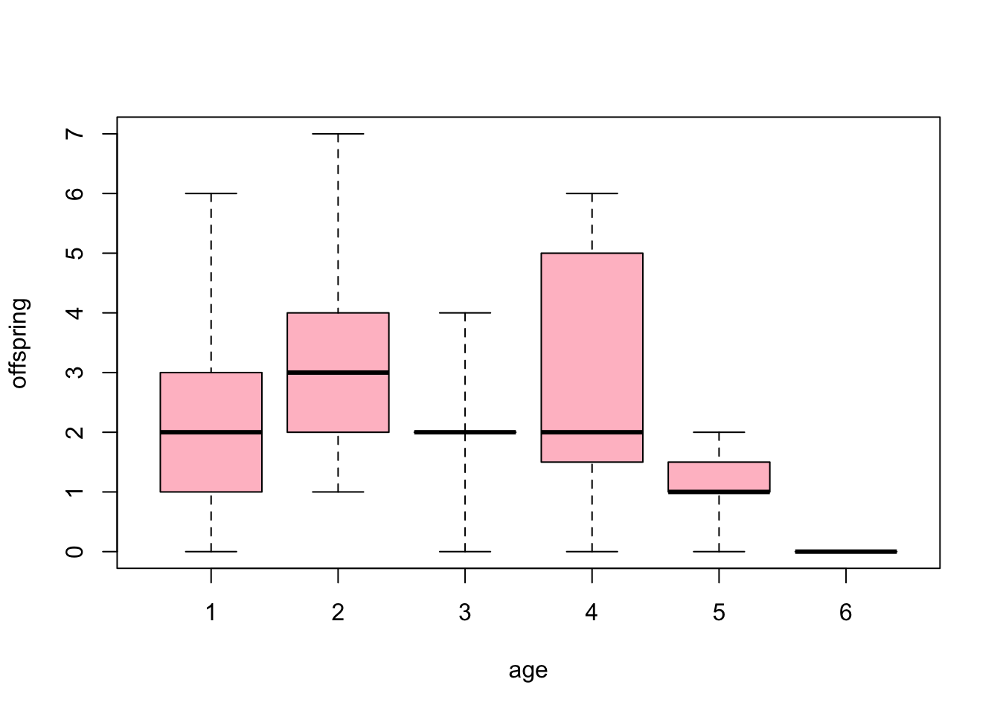
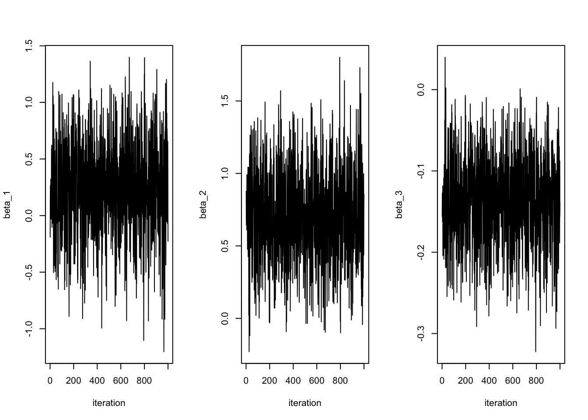
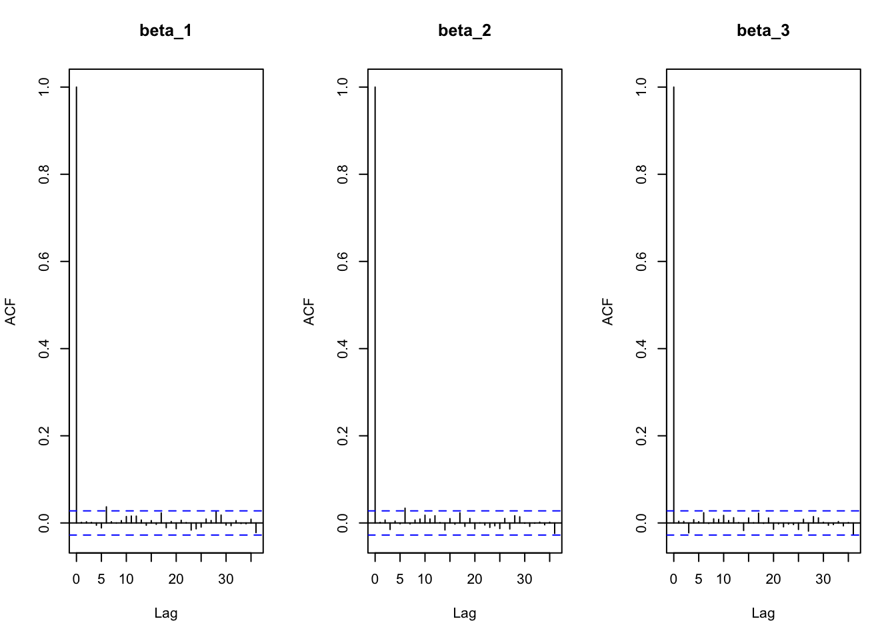
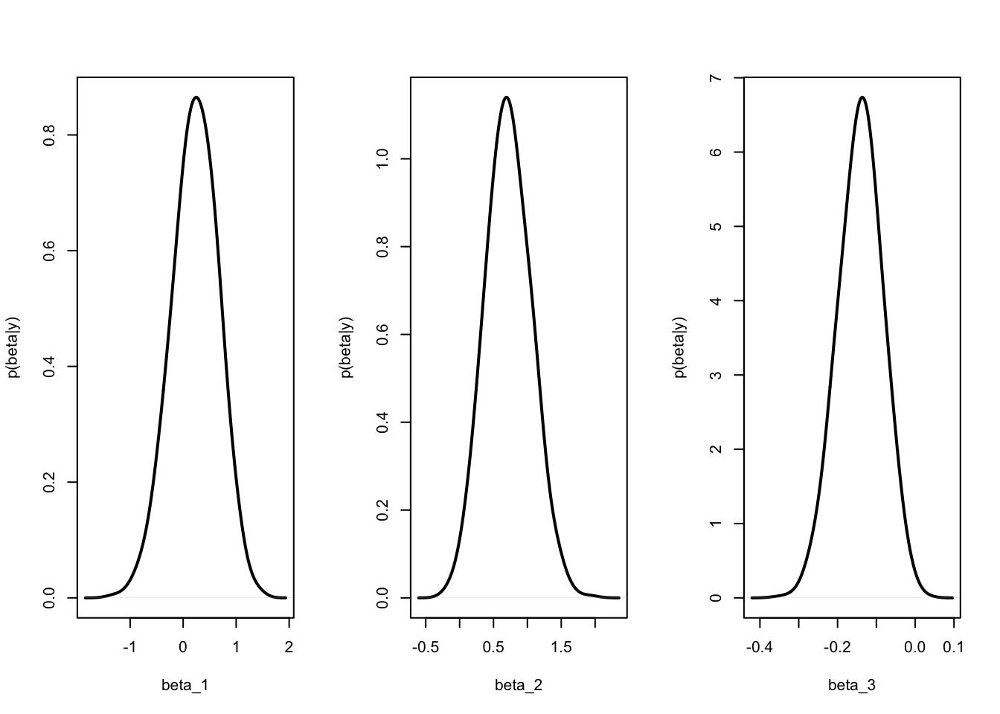
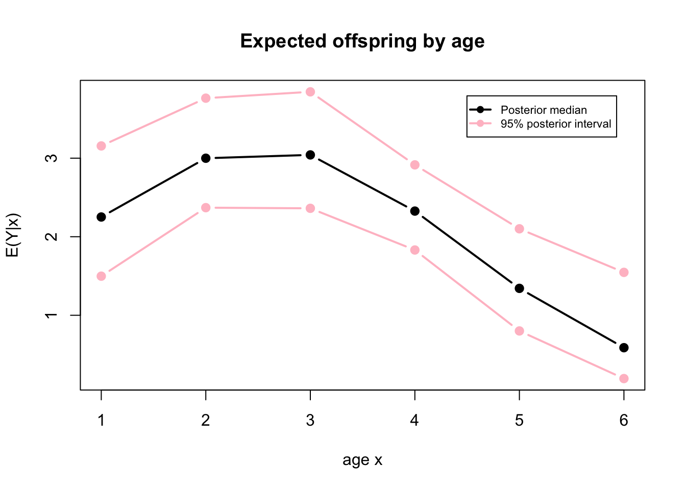

Lecture 20 Stan; Poisson regression
The following notes are mostly transcribed from Neath(0607,2021) lecture.
20.1 Intro to Stan
Do you agree with this statement: Bayesian statistics is cool?
Do you agree with this statement: Bayesian model-fitting is a lot more work than just fitting likelihood methods using \(\texttt{lm()}\) and \(\texttt{glm()}\) and such?
In recent years (beginning around 2000 or so) there is an effort under way to change this. The question is: Is it possible to create user-friendly software with reasonable defaults that will allow users who aren’t programming experts to still fit such models? The first serious effort in this movement was a package called BUGS “Bayesian Inference using Gibbs Sampler.” There’s been others such as JAGS “just another Gibbs sampler” and NIMBLE (created and maintained by a group at UC Berkeley).
The current state of the art among such programs is a program called Stan. It’s very general and very powerful. The output of Stan is a set of simulations from a posterior distribution in other words everything we need to do Bayesian inference. As an instructor for a course in Bayesian Statistics, there’s a question I struggle with a lot in the same way that if I were teaching Calculus, a question I would struggle with is do I allow graphing calculators? The art of Calculus is learning how to analyze functions from studying but how much is that relevant today when we hold machines in the palm of our hands that do those things for us? As an instructor for Bayesian Statistics, I want for us to get a good understanding of bayesian statistical models and how the simulation is done.
Is Stan user-friendly? Simple? No. It takes a considerable investment of effort to become a proficient Stan user.
The big news for today is that for pretty much everything we’ve done in this course there’s an easier way Or at least a way that is potentially easier if you’re willing to invest some effort in becoming proficient in Stan. I am more than willing to invest the effort to become proficient. I just haven’t yet. Some of you are not going to be doing much of these types of analyses after this course is over. For those of you who are it pays to become proficient in Stan.
How does Stan work? You have to input the data (obviously), you have to describe your model to stan e.g., the prior, the sampling models etc. But that’s it. You do not have to derive a posterior distribution. You do not have to try a whole bunch of different values of tuning parameters in your Metropolis samplers. Stan effectively does that stuff for you.
What’s the down side? You gotta learn it. It’s a new language. On this front the situation is better today than even just a few years ago in that it runs quite nicely within R and not just R, there’s Python Stan and others.
Stan was developed at and is maintained at Columbia! Professor Gelman is the project leader. There are a whole community of contributors and there are 3 or 4 or 5 or so full time employees of Stan. They regularly meet in Watson Hall and if you become a Stan user you become part of this community and you can pose questions to these people and participate in different conferences and activities and such. Where Stan is lagging right now; there does not exist at this time at a level appropriate for our course a textbook with a large number of worked Stan examples. But there very likely will in a couple of years.
20.2 Song sparrows reproductive success example
Remember the Poisson regression problem we did in section 17.2.
# Section 10.1 of Hoff (2009)
# 52 birds, response is 'fledged' -- number of offspring
# Predictor variable is age in years (1 to 5)
fledged <- c( 3, 1, 1, 2, 0, 0, 6, 3, 4, 2, 1, 6, 2, 3, 3,
4, 7, 2, 2, 1, 1, 3, 5, 5, 0, 2, 1, 2, 6, 6, 2, 2, 0, 2,
4, 1, 2, 5, 1, 2, 1, 0, 0, 2, 4, 2, 2, 2, 2, 0, 3, 2)
age <- c(3, 3, 1, 1, 1, 1, 1, 1, 1, 1, 2, 2, 2, 2, 2, 2,
2, 2, 2, 5, 5, 4, 4, 4, 4, 4, 4, 4, 4, 4, 4, 4, 4, 5,
4, 4, 4, 4, 5, 5, 5, 5, 3, 3, 3, 3, 3, 3, 3, 6, 1, 1)# Graphical summary of data: Boxplots by age
boxplot(fledged ~ as.factor(age), range=0, col="pink",
xlab="age", ylab="offspring")
\[ \log E(Y_i|x_i) = \beta_1+\beta_2x_i+\beta_3x_i^2 \] where \(Y_i\) is a sample from a Poisson distribution.
In this model \(x =\) age of female bird, \(Y =\) number of offspring that bird had. We observed two obvious things about this association (1) it’s positive then negative i.e., it’s not monotone. So it will require a quadratic term so we have \(\beta_1 + \beta_2x + \beta_3x^2.\) (2) Expected number of offspring cannot be negative so maybe we don’t say \(E(Y|x) = \beta x\) because that could be negative but rather \(E(Y|x) = \exp( \beta x ).\) So that’s how we got to our model. Also, a probability distribution is not completely determined by its mean hence we need a distribution assumption also. So we’ll use Poisson.
Let’s see if we get similar results as before using Stan. You need to install the R package \(\texttt{rstan}\).
library(rstan)# description of our model
y <- fledged
n <- length(y)
X <- cbind(rep(1,n), age, age^2)
rownames(X) <- 1:n;
colnames(X) <- c("x1","x2","x3")
n <- dim(X)[1]
p <- dim(X)[2]# Fit model using Stan
# Prior is beta_j ~ indep Normal(mn=0, sd=10)
run.time <- proc.time()
stan_model <- "
data{
int<lower=0> n;
int<lower=0> p;
int<lower=0> y[n];
matrix[n,p] X;
}
parameters{
vector[p] beta;
}
model{
beta ~ normal(0, 10);
y ~ poisson_log(X*beta);
}
"data <- list(n=n, p=p, y=y, X=X);
fit_stan <- stan(model_code=stan_model, data=data,
chains=1, iter=6000, warmup=1000, refresh = 0)
(proc.time() - run.time)/60 # elapsed time in minutes## user system elapsed
## 0.4337 0.0276 0.4857A stan model requires three components: (1) data statement (Tell stan what values are known), (2) parameters statements (tell stan what’s unknown) and (3) the model statement \(\texttt{y ~ Poisson_log(X*beta)}\) \(y\) is Poisson with log expected value of \(\beta x\).
“warmup” in Stan is the same thing we called “burn-in” before.
summary(fit_stan)$summary## mean se_mean sd 2.5% 25% 50% 75%
## beta[1] 0.2234 0.014585 0.43475 -0.67380 -0.06354 0.2371 0.5271
## beta[2] 0.7190 0.011342 0.33310 0.09595 0.48920 0.7101 0.9465
## beta[3] -0.1412 0.001888 0.05707 -0.25690 -0.17946 -0.1395 -0.1030
## lp__ -12.6975 0.036345 1.17219 -15.85503 -13.26755 -12.4025 -11.8346
## 97.5% n_eff Rhat
## beta[1] 1.02925 888.5 1
## beta[2] 1.39610 862.6 1
## beta[3] -0.03493 913.3 1
## lp__ -11.35609 1040.2 1We have 5,000 samples for the posterior distribution \(p(\beta | y, X)\)
- \(\texttt{se_mean = sd/sqrt{n_eff}}\).
- \(\texttt{Rhat}\) is a thing called the Gelman-Rubin statistic it’s a diagnostic of a not-yet-converged markov chain. If it’s bigger than 1.10 or so indicates you haven’t run the chain long enough.
- The last row of this table is a thing we haven’t talked about (and won’t)
Results <- summary(fit_stan)$summary[1:3, 4:8]
round(Results, 2)## 2.5% 25% 50% 75% 97.5%
## beta[1] -0.67 -0.06 0.24 0.53 1.03
## beta[2] 0.10 0.49 0.71 0.95 1.40
## beta[3] -0.26 -0.18 -0.14 -0.10 -0.03
If you want the samples themselves easy enough
beta.sims <- extract(fit_stan)$beta;head(beta.sims,3)##
## iterations [,1] [,2] [,3]
## [1,] -0.1908 0.8781 -0.1561
## [2,] 0.1824 0.6834 -0.1295
## [3,] 0.2664 0.6443 -0.1268The rows are iterations of the sampler the columns are the three components of \(\boldsymbol\beta\).
# Make trace plots of the first 1000 updates
par(mfrow=c(1,p))
for(j in 1:p){
plot(beta.sims[1:1000,j], type="l", xlab="iteration",
ylab=paste("beta_", j, sep=""), main="")
}
# Sample autocorrelation functions
par(mfrow=c(1,p))
for(j in 1:p){
acf(beta.sims[,j], main=paste("beta_", j, sep=""))
}
Whatever Stan is doing is better than the Metropolis algorithm. the autocorrelation is basically zero! Stan is doing a thing called Hamiltonian Monte Carlo which is not unrelated to Metropolis-Hastings but it’s not Metropolis-Hastings.
# Approximate posterior densites of beta1, beta2, beta3
par(mfrow=c(1,p))
for(j in 1:p){
plot(density(beta.sims[,j], adj=2), lwd=2, main="",
xlab=paste("beta_", j, sep=""), ylab="p(beta|y)")
}
Posterior inference for \(E(Y|x) = \beta_1 + \beta_2x + \beta_3x^2\)
S <- dim(beta.sims)[1]
theta.sims <- matrix(NA, S, 6)
rownames(theta.sims) <- 1:S;
colnames(theta.sims) <- paste("theta_", 1:6, sep="");
for (x in 1:6)
{
theta.sims[,x] <- exp(as.vector(beta.sims %*% c(1, x, x^2)))
}
quants <- apply(theta.sims, 2, quantile, probs=c(.025, .5, .975))
quants## theta_1 theta_2 theta_3 theta_4 theta_5 theta_6
## 2.5% 1.498 2.370 2.362 1.831 0.8006 0.1942
## 50% 2.251 2.999 3.042 2.326 1.3426 0.5873
## 97.5% 3.156 3.764 3.845 2.915 2.1010 1.5463Do the results agree with what we did in a previous lecture – ???
matplot(t(quants), type="b", pch=19, lty=1, lwd=2,
col=c("pink", "black", "pink"), xlab="age x",
ylab="E(Y|x)", main="Expected offspring by age")
legend("topright", inset=.05, pch=19, lty=1, lwd=2,
col=c("black","pink"),
legend=c("Posterior median", "95% posterior interval"),cex=0.7)
They sure do. Pretty much perfect agreement!